Home
About
Get Started
Team
Funding
School
(current)
The first POSYDON School
Dates: September 23nd-26th, 2025
Location:
NSF-Simons SkAI Institute
, John Hancock Center, Chicago, IL
To register and find more information, please visit
posydon.org/posydon-school-2025/
.